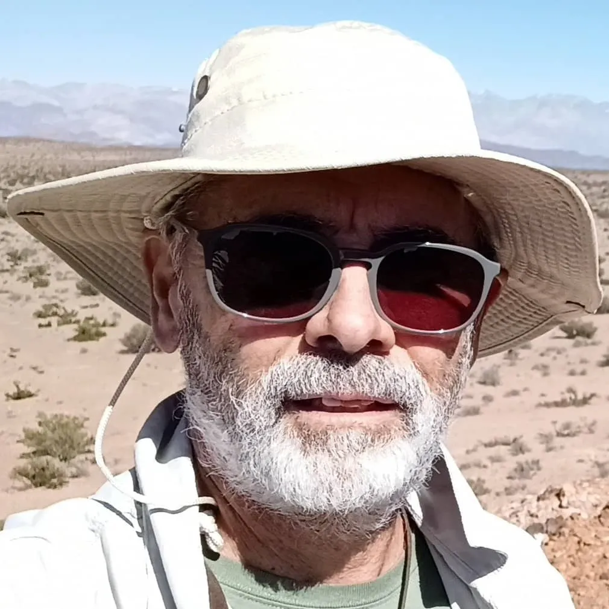

Licenciado en Ciencias Geológicas, egresado de la Universidad Nacional de San Juan.
Carlos completó su formación académica con un Diplomado en Economía de Minerales en la Cámara Minera del Perú/Sociedad Geológica de Sudáfrica posterior a su egreso de la Universidad Nacional de San Juan. Además realizó distintos cursos de especialización, entre los que se destaca Ore Deposit Models & Exploration Strategies en el CODES, Universidad de Tasmania. Es especialista en Exploración, Evaluación y Gerenciamiento de Proyectos Mineros. Desde el año 1990 ha estado involucrado en la exploración minera con numerosas empresas Junior y Senior. Ha trabajado en distintos ambientes geológicos a lo largo de toda la Argentina, además de Chile y Perú. Formó parte del equipo de Minera Andes descubridor de la mina San José-Huevos Verdes, en la provincia de Santa Cruz.